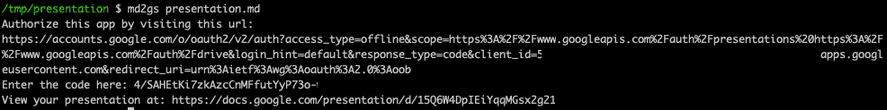
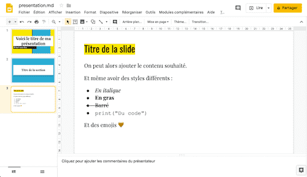

Je vais vous expliquer ici un moyen efficace pour créer une présentation Powerpoint à partir de texte au format Markdown.
J'aime beaucoup le Markdown. Avec quelques * et [, on fait des miracles.
Je l'utilise d'ailleurs pour rédiger ce blog (avec l'aide de Jekyll).
Si vous ne connaissez pas encore le Markdown, je vous encourage à lire cet article sur openclassrooms
Je pense que tous les développeurs apprécieront la puissance de l'outil (et la possibilité de s'éloigner de Powerpoint 😱).
Des développeurs chez Google ont créé md2googleslides.
Il suffit de créer votre présentation au format Markdown (on en reparle juste après), et d'exécuter md2gslides presentation.md.
Votre présentation est alors générée et déposée sur votre Google Drive.
Cet outil nécessite d'installer Node.js sur votre PC, ainsi que son gestionnaire de paquets npm pour télécharger le package md2gslides.
Si ça n'est pas un problème pour vous, rendez-vous ici pour la procédure d'installation officielle.
Si, comme moi, vous n'aimez pas devoir installer tout un tas d'outils et de librairies sur votre PC, je vous ai préparé quelque-chose 😉
Ça n'est plus un secret, j'aime bien utiliser Docker pour éviter ces problèmes de gestion de dépendances.
Du coup, je vous ai concocté une image Docker qui contient md2gslides et toutes ses dépendances.
Le tout dans une image de moins de 65 Mo (à titre indicatif, l'image de Node fait environ 330 Mo... et c'est sans md2gslides!).
Si vous êtes curieux de savoir comment on peut faire d'aussi petites images Docker, allez jeter un œil aux images Distroless de Google et à mon Dockerfile
Pas mal, non?
Et c'est pas fini...
Vous ne souhaitez pas faire de docker run --rm -it md2gs [...] à chaque exécution de la commande? Je vous comprends.
Que diriez-vous de pouvoir utiliser cette image Docker comme une simple commande?
Votre vœu est exaucé 🎁
Je vous ai préparé le script md2gs, qu'il suffira d'appeler de cette manière :
md2gs presentation.md
Comme pour le reste, j'ai tâché de vous faciliter l'installation au maximum.
Un ligne de commande :
curl -fsSL https://raw.githubusercontent.com/tducret/md2gs/master/get-md2gs.sh | sh
Plus d'infos sur le repo Github
Créez un fichier presentation.md et ajoutez le contenu suivant :
---
# Voici le titre de ma présentation
## Et mon sous-titre
---
# Titre de la section
---
# Titre de la slide
On peut alors ajouter le contenu souhaité.
Et même avoir des styles différents :
* *En italique*
* **En gras**
* ~~Barré~~
* `print("Du code")`
Et des emojis :heart:
Puis, dans le répertoire de la présentation, exécutez :
md2gs presentation.md
A la première utilisation, la commande vous demandera d'autoriser l'utilisation de votre Google Drive.
Vous devriez avoir dans votre terminal quelque-chose du genre:
Authorize this app by visiting this url:
https://accounts.google.com/o/oauth2/v2/auth?access_type=offline
[...]
Recopiez le lien fourni, et ouvrez-le dans votre navigateur.
Cliquez sur Autoriser et recopiez le code généré dans le terminal.

Le lien vers la présentation est ensuite renvoyé par la commande.
⚠️ Pas de panique, cette étape d'autorisation n'est à faire qu'à la première utilisation.
Donc, si on reprend, vous exécutez :
md2gs presentation.md
La présentation est alors générée et publiée sur votre Google Drive. La commande vous renvoie un lien vers la présentation.
Ouvrez ce lien dans le navigateur et admirez votre travail...
Si le thème par défaut vous semble un peu terne, cliquez dans le menu Diapositive > Changer de thème... et choisissez-en un autre.
Et voilà le travail ⬇️

Il est possible de faire bien plus avec md2gslides.
Vous pourrez ajouter :
Pour plus d'explications, allez voir le repo officiel et leur fichier Markdown d'exemple (bien plus complet que celui de cet article).
Vous savez maintenant créer une présentation sur Google Slides à partir d'un fichier en Markdown. Si vous êtes développeur, il peut être intéressant de gérer ce fichier dans un repository Git, pour suivre ses modifications ou collaborer facilement.
On peut aussi imaginer la génération automatique d'une présentation.
A partir des éléments dans votre base Jira, vous pourriez faire générer le bilan de fin de sprint par exemple (certains comprendront de quoi je parle 🤡).